Кейс BWT
Мобильное приложение BWT —
сервис для записи
в плавательный бассейн
Кейс о том, как сделать запись на тренировки в бассейн BWT простыми и прозрачными,
а загруженность бассейна информативной.
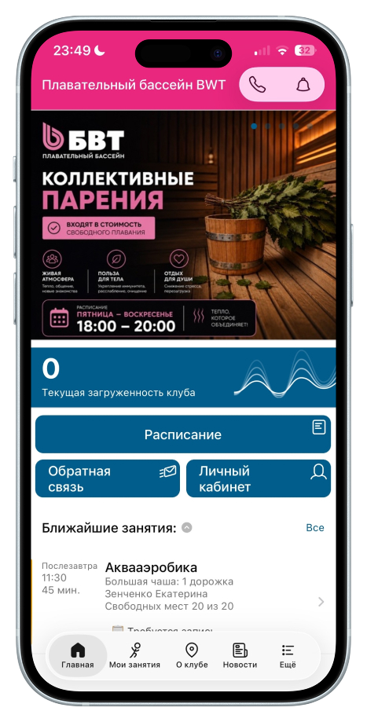
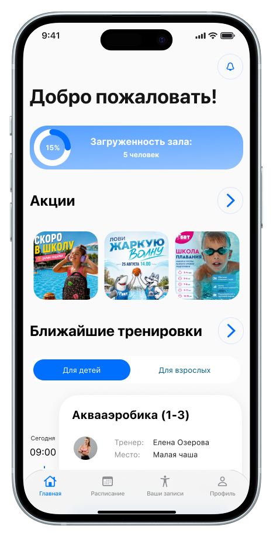
Контекст
BWT — городской бассейн, где можно заниматься с тренером или самостоятельно. Приложение выполняло две основные функции: показывало загруженность бассейна и позволяло бронировать тренировки. Однако эти функции были реализованы с рядом проблем, которые я выявила в ходе непосредственного использования.
Роль
Год
Тип
Инструменты
Дискавери
Изучила текущий флоу и провела устный опрос среди друзей-пользователей об их опыте использования приложения. Обратная связь подтвердила наличие узких мест, требующих внимания, всё это позволило мне определить направление для дальнейшей работы.
На основе анализа конкурентных решений я выдвинула гипотезы, которые проверила в ходе глубинных интервью. По итогам глубинных интервью выделила пользовательские боли, переведя их в формат JTBD.
На основе проведённых исследований я определила необходимый функционал продукта, спроектировала путь пользователя, выбрала дизайн-решение и отрисовала основные макеты.
Проблемы
Пользователи не могут быстро записаться
В текущей версии приложения процесс записи требует много действий: единственная доступная точка входа для записи на тренировку — это нажатие на карточку тренировки.
Нет подтверждения действий
После нажатия «Записаться» пользователь не получает подтверждения действия, то же самое и с кнопкой «Отменить». В процессе использования приложения пользователь может нажать кнопку случайно и отменить тренировку. Все это вызывает неопределенность у пользователя
Интуитивно непонятная навигация в таб баре и самом приложении
таб бар перегружен элементами, которые не являются ключевыми для пользователя. Вместо быстрого доступа к основным сценариям (расписание, управление бронированиями, профиль) таб бар занимают второстепенные или информационные разделы, которые не помогают пользователю решить его задачу.
Итог
Приложение работало скорее как витрина: пользователи заходили, смотрели, но редко доходили до записи. Целевые действия совершались через звонок или личное обращение в зал — потому что интерфейс был неочевидным, а путь к записи — запутанным. Это создавало дополнительную нагрузку на ресепшн и снижало конверсию приложения.
Задачи в рамках проекта
На основе выявленных проблем я сформулировала задачи, которые определили направление дальнейшей работы
Критерии успеха
Так как проект учебный, я сформулировала гипотетические критерии успеха:
Запись понятна пользователю и занимает не более 30 секунд
Пользователь понимает, что он записался или отменил тренировку
Пользователь успешно завершает сценарий с первой попытки, без ошибок и возвратов назад
Ценность приложения
Приложение BWT — это мост между бизнесом и клиентом: бизнес получает заполненные группы и разгруженный ресепшн, клиент получает контроль над своим расписанием без звонков и ожидания.
Главная задача: снизить нагрузку на администраторов и увеличить заполняемость тренировок за счёт самообслуживания клиентов.
Главная задача: дать клиенту бассейна ощущение контроля над своим расписанием без звонков и уточнений.
Глубинные интервью
Чтобы проверить свои предположения и понять, что на самом деле движет пользователями, я созвонилась с 4 людьми, которые пользуются бассейном BWT. На основе этих интервью я выделила ключевые персоны, которые отражают разные сценарии использования приложения.
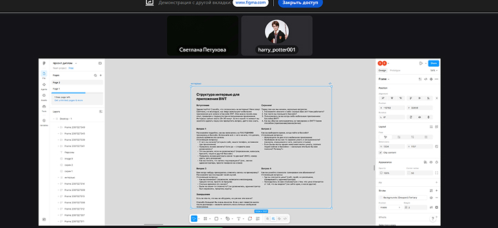
После проведения глубинных интервью я свела ответы респондентов в единую таблицу, чтобы выявить болевые точки и критерии принятия решений. Благодаря таблице я смогла обнаружить инсайты, которые и легли в основу продуктового решения.
Ключевые инсайты после глубинных интервью
Новички выбирают онлайн-запись не ради скорости, а чтобы избежать стресса от личного контакта с администратором. Кроме того, им важно видеть загруженность зала.
3 из 4 респондентов отметили важность функции загрузки зала.
Аудитория, избегающая личных контактов, хочет полностью управлять своим расписанием дистанционно.
Пользователи хотят без чувства вины отменить тренировки — сейчас для этого необходимо лично звонить на ресепшн.
Персоны
Чтобы спроектировать продукт, который будет удобен разным типам пользователей, необходимо сегментировать аудиторию по потребностям.
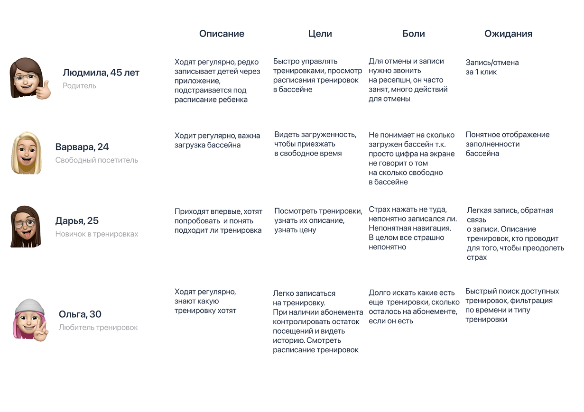
Джоб стори
На основе глубинных интервью я выделила ключевые сценарии пользователей и сформулировала джоб стори. Это позволило мне перейти от пользовательских болей к конкретным продуктовым решениям.
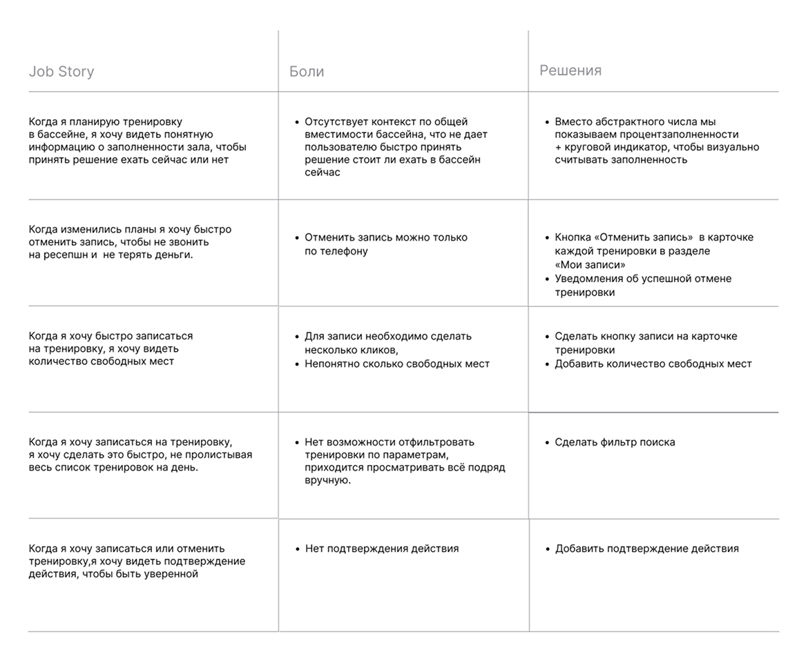
Гипотезы
На основе полученной информации я выдвинула гипотезы, которые помогли перейти от болевых точек пользователей к конкретным продуктовым решениям.
Визуализация загруженности зала
Приоритет: 3/3 = 1Если мы будем показывать заполненность бассейна в процентах, вместо абстрактного числа, то свободный посетитель сможет быстрее принять решение по времени посещения бассейна.
Безопасная отмена записи
Приоритет: 3/1 = 3Если мы визуально дифференцируем кнопку «Отменить» от кнопки «Записаться», то пользователи будут быстрее распознавать доступное действие.
Быстрая запись в один клик
Приоритет: 3/1 = 3Если мы вынесем кнопку «Записаться», цену и счётчик свободных мест прямо в карточку тренировки, то пользователь сможет записаться в один клик.
Фильтрация тренировок
Приоритет: 2/2 = 1Если мы добавим фильтр по параметрам (тип занятия, время, тренер), то пользователь сможет быстро найти подходящую тренировку.
Календарь на главной странице
Гипотеза не подтвердиласьЕсли разместить компактный календарь с ближайшими датами прямо на главном экране, то пользователи смогут быстрее находить нужную тренировку.
Подтверждение действий через модальное окно
Приоритет: 3/2 = 1,5Если добавить модальное окно подтверждения с краткой сводкой и двумя чётко различимыми кнопками — то пользователь будет увереннее совершать действие.
Добавление календаря в раздел «Мои тренировки»
Приоритет: 1/2 = 0,5Если мы добавим календарь с горизонтальной лентой дат в раздел «Тренировки», то пользователь сможет быстро находить свои занятия на конкретный день.
Юзер флоу
Прежде чем рисовать экраны, я спроектировала путь пользователя, который помог мне визуализировать, как именно пользователь будет двигаться по приложению.

Процесс работы
Интервью дали мне понимание проблем. Дальше я начала делать наброски для первой визуализации своего решения. В этом разделе — мои черновики.
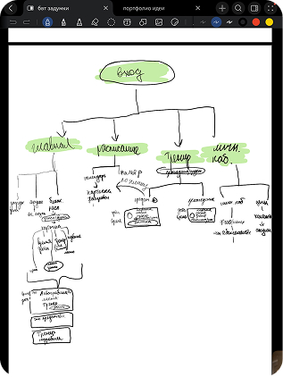
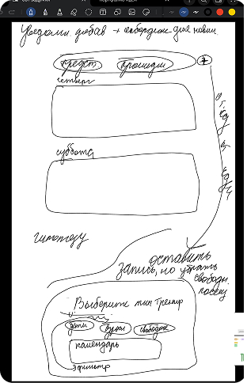
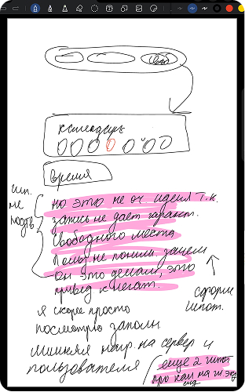
Главный экран (1)
После проведённых интервью и проектирования юзер флоу я перешла к отрисовке макетов. Основные фичи описаны ниже
1. Добавлен процентный индикатор на главный экран в зону максимального внимания. Ранее в приложении отображалось просто число без контекста наполняемости. Эти данные не помогали принять решение. Теперь процент заполненности даёт мгновенное понимание ситуации
2. Пересобран тап-бар: «Новости» и «О нас» — это информация, а не сценарии. Я убрала их из нижней навигации и оставила четыре ключевых раздела, которые закрывают основные задачи пользователя. (главная, расписание тренировок, мои записи, личный кабинет) Пользователь всегда знает, где найти расписание, свои записи и профиль
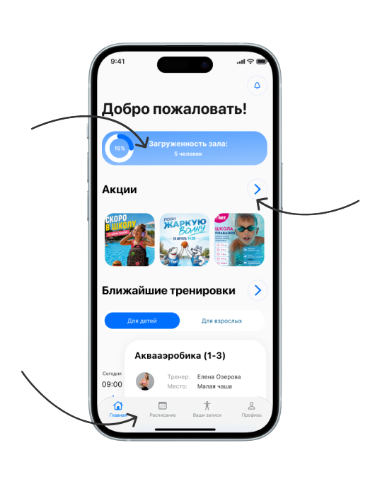
3. Добавлена кнопка «Все акции» для быстрого просмотра всех предложений. Уменьшен блок акций и сделала его в виде компактных квадратов. Теперь пользователь видит сразу несколько предложений, а экран не перегружен — акции не конкурируют с кнопкой записи за внимание. Пользователи, чувствительные к цене (родители, новички), могут за 1 клик увидеть все спецпредложения и абонементы
Главный экран (2)
Главный экран стал точкой входа в приложение: персонализированное приветствие, индикатор загрузки в зоне максимального внимания, акции в один клик, ближайшие тренировки
1. Свитчер «Детские / Взрослые» тренировки позволяет быстро переключаться между расписаниями для разных сегментов пользователей. Родителям не нужно искать детские дорожки среди взрослых, а взрослым — фильтровать детские занятия
2. Карточка тренировки показывает заполненность конкретного слота. Это даёт пользователю полную прозрачность — он видит, сколько мест осталось, и принимает решение без звонков и сомнений
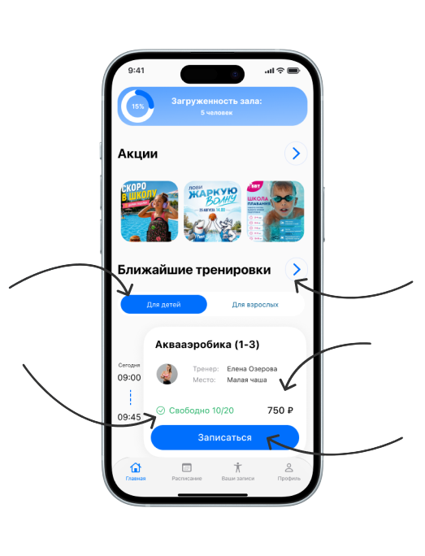
3. Добавлена кнопка для быстрого перехода к полному расписанию для тех, кто хочет посмотреть все тренировки
4. На карточку добавлена цена, чтобы пользователь сразу видел стоимость и мог оценить, подходит ли ему предложение. Это убирает неопределённость и сокращает путь к записи
5. Кнопка «Записаться» вынесена на карточку тренировки в общем списке — пользователь видит слот, цену, свободные места и может записаться сразу, без лишних переходов. Это сокращает путь к действию и повышает конверсию. Кроме того, добавлено подтверждение записи, которое даёт пользователю чёткий сигнал, что действие выполнено. Это убирает страх, если он случайно нажал кнопку, а также подтверждает действие
Расписание занятий
Расписание теперь включает два уровня фильтрации: глобальный переключатель «Дети/Взрослые» разделяет аудиторию, а расширенный фильтр позволяет уточнить запрос по времени, типу занятия и тренеру. Это решает проблему выбора при большом количестве занятий в общем списке. Сокращено время поиска тренировки
1. Добавлен переход к полноценному календарю для долгосрочного планирования. Клик по кнопке открывает полный календарь, позволяя выбрать любую дату и составить график на недели вперёд
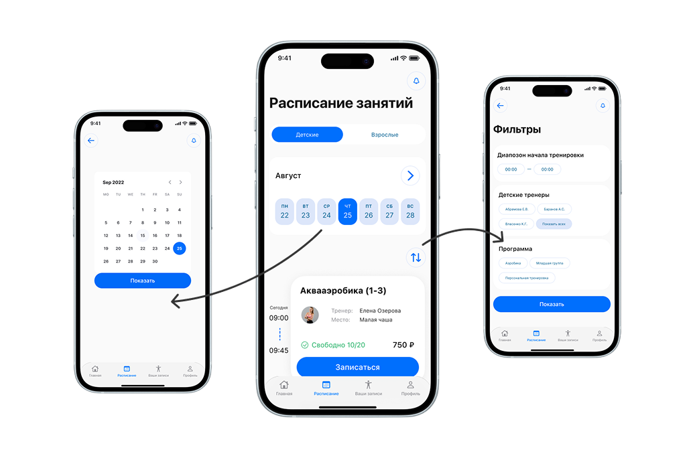
2. Расширенный фильтр для точного поиска. Если переключатель «Дети/Взрослые» делит аудиторию глобально, то фильтр позволяет уточнить запрос: выбрать конкретное время, тип тренировки, тренера. Решает проблему «паралича выбора» при большом количестве занятий в общем расписании
3. Добавлены фильтры для точного поиска тренировок. Пользователь не листает весь список вручную, а сразу выбирает нужное: по дате, времени, типу тренировки, тренеру. Это ускоряет выбор тренировки, сокращая время до 1–2 минут
Экран тренировок пользователя
Центр управления тренировками пользователя. Здесь собраны все предстоящие и прошедшие занятия в одном месте. Главная цель экрана — дать пользователю полный контроль над расписанием:
1. Разделение контекстов: «Предстоящие / Прошедшие». Убирает визуальный шум и показывает только релевантные тренировки. По умолчанию открыты «Предстоящие», чтобы пользователь сразу видел активные записи и мог ими управлять (отменить/перенести), не листая историю
2. В карточке тренировки отображается статус абонемента: если он привязан — пользователь видит, сколько посещений осталось. Если абонемента нет — отображается только цена разового посещения. Это даёт пользователю прозрачную информацию о списании и остатке, без необходимости заходить в профиль
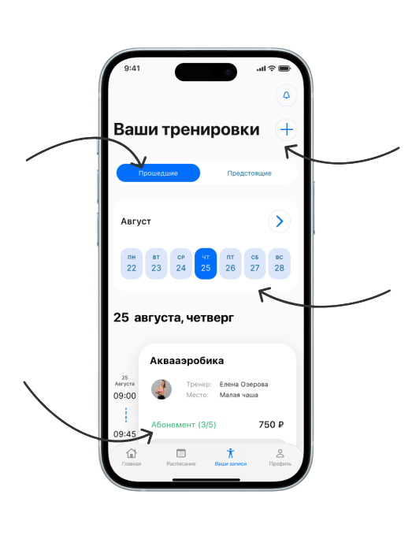
3. Кнопка «+» в разделе «Мои тренировки» даёт возможность добавить новую запись, не покидая текущий раздел. Пользователь остаётся в контексте своих тренировок и может продолжить планирование без лишних переходов
4. Переход к полноценному календарю для долгосрочного планирования. Клик по кнопке открывает полный календарь, позволяя выбрать любую дату и составить график на недели вперёд. Кроме того, при нажатии на конкретный день открываются записи на конкретный день